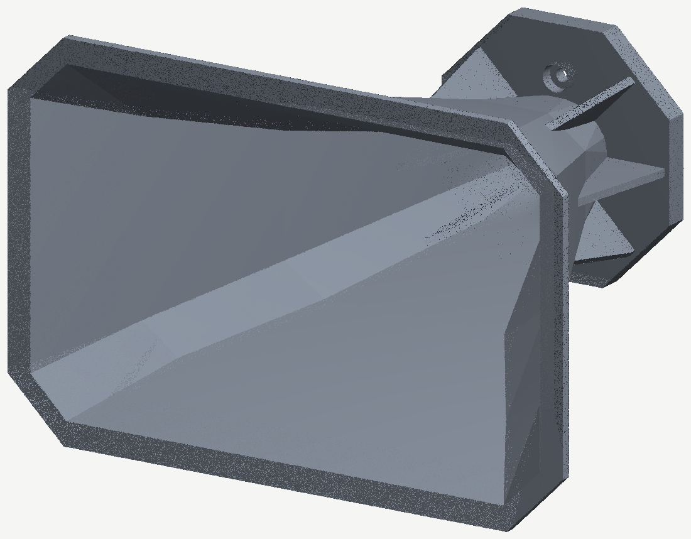
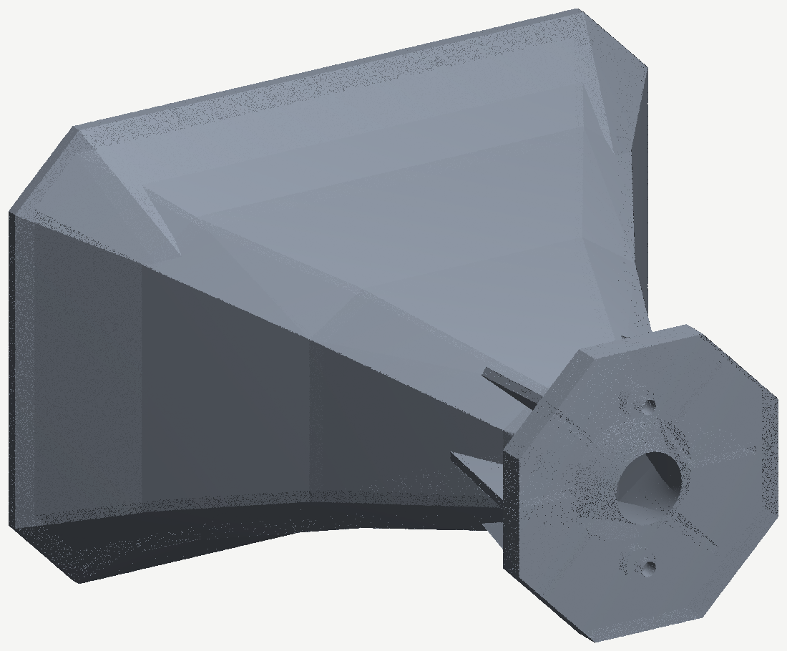
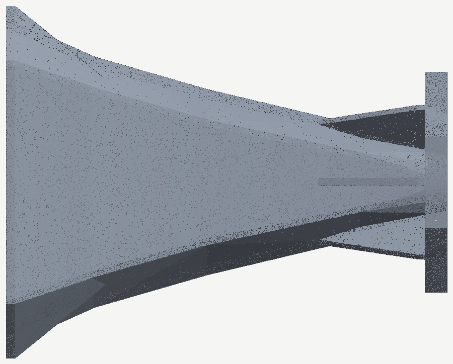
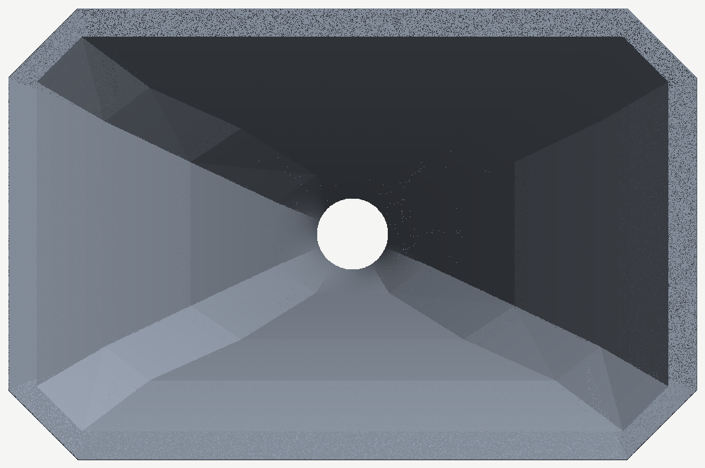
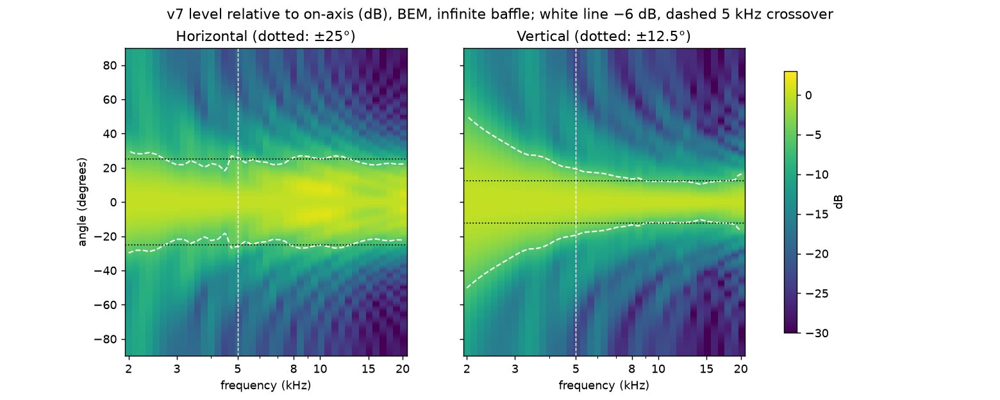
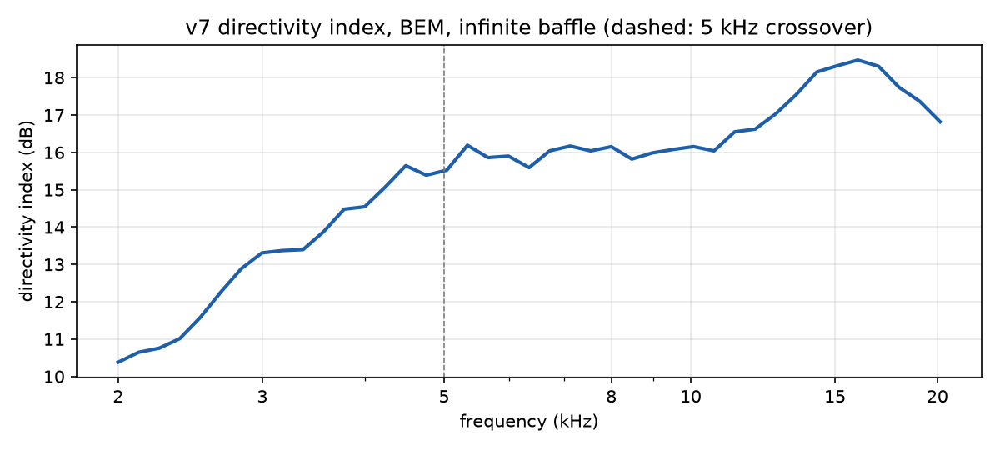
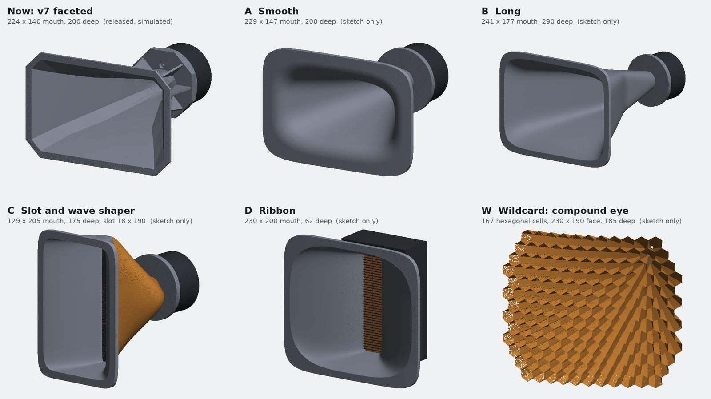
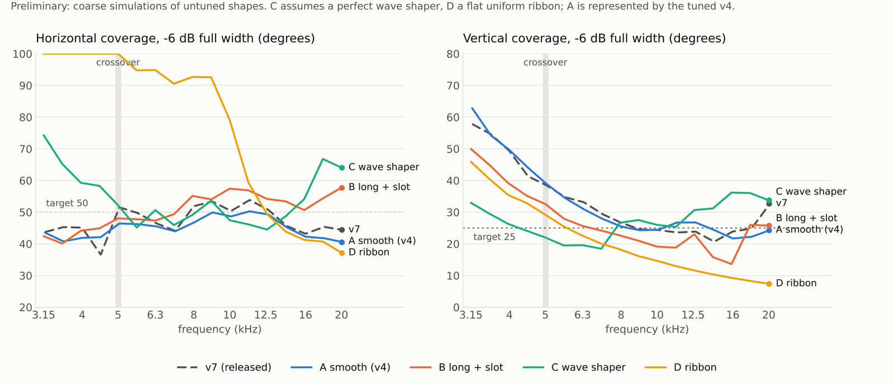

A one-piece 3D-printed 1" high-frequency horn to sit on top of a Funktion-One Res 2S8 (the 8" mid section of a Res 2) and match its 50° × 25° coverage.
The Res 2S8 is an 8" mid horn with no high-frequency section. This project designs a printed horn for a B&C DH450 compression driver to go above it, worked out and simulated before any part was made, printable in one piece on a 256 mm bed, and matched to the 8"'s coverage so the two sum cleanly through the crossover.
The current design, v7, is a faceted horn: a round throat adapter, three bands of flat facets between octagonal rings, and a flat front flange flush with the mouth (nothing stands forward of the mouth plane). It is 200 mm deep with a 224 × 140 mm mouth. It replaced a smooth oblate-spheroidal horn (v4) after a redesign for a look closer to Funktion-One's and to remove a rim lip that was not part of the simulated shape.
Where it stands: v7 is the current release file. The export reports 170 of 170 tests passed, 32 of 32 planted defects caught and 23 release checks passed export's claim, not re-run here. Its SHA-256 has been checked against the export's release manifest, nothing more.
What's next: measure the depth of the driver's two M5 threaded holes (not published by the maker), re-run the full verification suite in this lab, then print a 60 mm test section of the driver end to check the fixing before printing the whole horn.
| Coverage | Match the Res 2: 50° horizontal × 25° vertical nominal [R2S8 spec sheet, Funktion-One, w3] |
|---|---|
| Use | Club or venue, listeners at 4–15 m |
| Crossover | Any type; whatever sums best with the 8" (the R2S8 is specified to 5 kHz [R2S8 spec sheet, w3]) |
| Phase coherence | Coherent with the 8" through the crossover |
| Manufacture | FDM print, one piece on a 256 × 256 × 256 mm build volume, no supports |
| Mounting | No modification to the Res 2S8 (flat top). Mount not yet designed |
| Driver | B&C DH450 1" compression driver, fixed by 2 × M5 on 57 mm [DH450 datasheet, B&C, w4] |
| Look | Closer to Funktion-One's style; faceted; flat front flange; no lip |
| How it will be measured | Printed dimensions against the file; horn alone at 4 m on an arc about the driver face: level at ±25° horizontal and ±12.5° vertical within 2 dB of the prediction at 8.0 and 10.1 kHz; then the two-way sum with the 8" (delay set by the inverted-polarity null at the crossover) |
| 11 Nov 2026 | Horn only; mounting parts dropped. Why: the first file's mounting keels cut through the wall into the flare. |
|---|---|
| 11–12 Nov 2026 | 200 mm deep, single apex, no diffraction slot. Why: holding 25° vertical at 5 kHz needs about 190 mm of mouth height (aperture limit sin θ = 0.603 λ / h, derived and checked in code), which a single-apex horn reaches only beyond 350 mm length derived. The trade: wider vertical at the crossover in return for a clean wavefront and a one-piece print. |
| 12 Nov 2026 | Every file carries a version number, never reused. Overhang design rule 42°, not the 45° limit. Why: a 45° design printed as 45.07° and drew supports. |
| 13 Nov 2026 | Complete redesign as a faceted horn with a flat front flange and no lip, driven by Tek's feedback. Anything in the file that is not in the simulated shape is removed or simulated. |
| 13–14 Nov 2026 | Facet rings fitted by least squares to the 50° × 25° target (11 dimensions fitted; corner cuts chosen by hand from a six-variant study; a second fitting stage found nothing better). Tangent throat entry kept over a straight one (no useful difference). |
| 14 Nov 2026 | v5 withdrawn (ridges under the flange corners leaned 50° and the slicer added supports); v6 superseded (no room for a washer under the screws); v7 enlarges the screw counterbores to 11 × 5 mm for M5 washers. Slicer verdict and a ridge check made conditions of release. |
| 14 Nov 2026 | Materials: PLA for prototypes, PETG final, PETG-CF production (Tek). |
| 14 Nov 2026 | Starting crossover: 5.0 kHz, 48 dB/octave Linkwitz-Riley estimate, starting settings. |
| 16 Nov 2026 | v5–v7 merged into this lab's project over the v4 files; v7 is the current release. Why: Tek's choice. Everything imported is unverified here until the full suite is re-run. |




| Overall size | 244 × 160 × 200 mm; volume 533 cm³ (slicer reading of the file) |
|---|---|
| Mouth opening | 224 × 140 mm, corner cuts 16 × 16 mm |
| Wall | 4.5 mm offset of the acoustic surface |
| Steepest face / ridge | 39° / 41.3° (design rule 42°; thin margin) |
| Driver fixing | 2 × M5 × 12 from the horn side with washers, counterbores 11 × 5 mm; M5 × 16 only if the holes are at least 11 mm deep. Only an L-shaped hex key reaches the screws |
| Release checks | 23 checks (closed solid, inner surface equals the simulated one, nothing in the air volume, front face flat, ridges, fixings from the standards, slicer adds no supports), 32 planted defects all rejected export's claim, not re-run here |


| Coverage, 8 to 12.7 kHz | 50–54° × 24–28° (−6 dB full width) estimate (unmeasured) |
|---|---|
| Horizontal width, 5 to 12.7 kHz | 44–54°; level at ±25° between −4.8 and −7.9 dB estimate (unmeasured) |
| Horizontal width above 16 kHz | 44–45° estimate (unmeasured) |
| Vertical width at 5 kHz | 38° (wider than the 25° target: the 200 mm single-apex trade) estimate (unmeasured) |
| Directivity-index step to the 8" at crossover | 1.8 dB, against 4.1 dB for Funktion-One's own Res 2SH horn computed from their published directivity data estimate (unmeasured) |
| Ripple | Level at ±25° steps about 0.76 dB rms between neighbouring frequencies, about twice the smooth v4 (0.34 dB) estimate (unmeasured) |
| Acoustic source position | On axis the horn behaves like a source about 205 mm behind its mouth estimate (unmeasured) |
| Lobing with the 8" | First cancellations about ±8° either side of the axis at 5 kHz with centres 240.5 mm apart (spacing assumed; no mount yet) estimate (unmeasured) |
| Starting crossover | 5.0 kHz, 48 dB/octave Linkwitz-Riley; delay to be set by measurement estimate, starting settings |
In this lab only the earlier fast test set has been run (14 November 2026, 88 of 88 passed), and that was on the v4-era files before v7 was imported.


Nothing has been printed. These are the recommended settings carried over from the export, not tried on a print, and the export's own slicer check. Filament brand is not set; temperatures and speeds are generic, not from the filament maker.
| v7 horn, one piece (also used for the 60 mm test section) | |
| Printer | 256 mm-bed printer (front flange leaves 6.0 mm each side), or 300 mm-bed printer |
| Material / brand | PLA (prototype), PETG (final), PETG-CF (production) / brand not set |
| Nozzle | 0.4 mm; hardened steel for PETG-CF (300 mm-bed printer's nozzle material unconfirmed: check before PETG-CF). With 0.6 mm: keep 0.2 mm layers and at least 4 walls (release checks run only for 0.4 mm) |
| Layer height | 0.20 mm (1,000 layers) |
| Walls | 5 loops (keeps the washer seats off sparse infill) |
| Top / bottom layers | not set (slicer profile default) |
| Infill | 25 %, gyroid |
| Supports | off; the slicer check adds none at 45° or 40° thresholds |
| Orientation | driver flange on the bed, centred |
| Splits and joints | none, one piece; test section = first 60 mm only |
| Temperatures (nozzle / bed, textured PEI) | PLA 220 / 60 °C; PETG 250 / 75 °C; PETG-CF 260 / 75 °C |
| Speed / profile | standard 0.20 mm profile with generic filament preset; outer wall up to 150 (PLA), 100 (PETG), 80 (PETG-CF) mm/s; max volumetric 12 mm³/s PETG, 10 mm³/s PETG-CF; part fan 30–50 % PETG, 20–40 % PETG-CF; seam at back; elephant-foot compensation 0.15 mm |
| Other | Dry PETG 65 °C 6 h, PETG-CF 65 °C 8 h; enclosure closed for PETG and PETG-CF, open for PLA |
| Brim | outer brim only, 8 mm |
| Slicer and profile version | printing slicer and profile version not set; release check sliced with PrusaSlicer 2.7.2 command line (0.4 mm nozzle, 0.2 mm layers, 5 perimeters, 25 % default pattern, 240 / 80 °C, 8 mm brim, no elephant-foot compensation) |
| Estimated time and mass | 33 h 7 min, 512 g (release check slice above, filament density 1.27 g/cm³); 60 mm test section not sliced: not set |